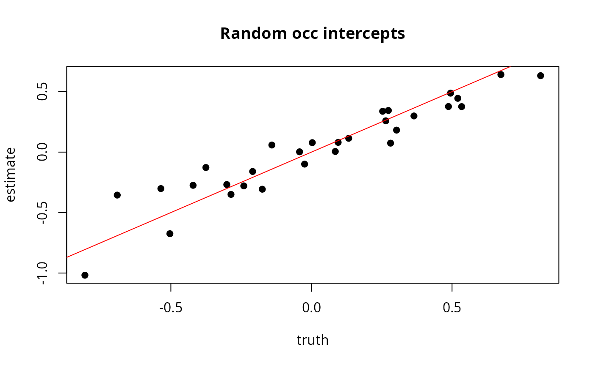

occuComm.RdThis function fits a multi-species, community occupancy model with random intercepts and slopes by species.
occuComm(formula, data, starts, method="BFGS", se=TRUE, ...)Double right-hand side formula describing covariates of
detection and occupancy in that order. It is also possible to include
random intercepts using lme4-type syntax.
An unmarkedFrameOccuComm object
Vector of parameter starting values.
Optimization method used by optim.
Logical specifying whether or not to compute standard errors.
Additional arguments to optim, such as lower and upper bounds
In a community occupancy model, detection-nondetection data from multiple species are analyzed together. Intercepts and slopes in the model are species-specific and come from common distributions, allowing for information sharing across species. This structure also allows estimation of site richness. For example, suppose you have sites indexed \(i\), occasions \(j\) and species \(s\). The true occupancy state at a site is
$$z_{is} \sim \mathrm{Bernoulli}(\psi_{is})$$
with detection data \(y_{ijs}\) modeled as
$$y_{ijs} \sim \mathrm{Bernoulli}(p_{ijs} \cdot z_{is})$$
Occupancy probability \(\psi_{is}\) can be modeled as a function of covariates with species-specific random intercepts and slopes coming from common distributions:
$$\psi_{is} = \mathrm{logit}(\beta_{0,s} + \beta_{i,s} \cdot x_i)$$ $$\beta_{0,s} \sim \mathrm{Normal}(\mu_{\beta_0}, \sigma_{\beta_0})$$ $$\beta_{1,s} \sim \mathrm{Normal}(\mu_{\beta_1}, \sigma_{\beta_1})$$
A similar structure can be implemented for detection probability \(p\).
Note there is a variety of this model that incorporates hypothetical completely
unobserved species using data augmentation, but that is not a model that
unmarked is able to fit at this time.
See the vignette for occuComm and Kery and Royle (2016), Section 11.6
for more details.
Kery, Marc, and J. Andrew Royle. 2016. Applied Hierarchical Modeling in Ecology, Volume 1. Academic Press.
unmarkedFitOccuComm object describing the model fit.
# Simulate multispecies data
M <- 300
J <- 5
S <- 30
set.seed(123)
x <- rnorm(M)
mu_0 <- 0
sd_0 <- 0.4
beta0 <- rnorm(S, mu_0, sd_0)
mu_x <- 1
sd_x <- 0.3
beta_x <- rnorm(S, mu_x, sd_x)
mu_a <- 0
sd_a <- 0.2
alpha0 <- rnorm(S, mu_a, sd_a)
ylist <- list()
z <- matrix(NA, M, S)
for (s in 1:S){
psi <- plogis(beta0[s] + beta_x[s] * x)
z[,s] <- rbinom(M, 1, psi)
p <- plogis(alpha0[s])
y <- matrix(NA, M, J)
for (m in 1:M){
y[m,] <- rbinom(J, 1, p * z[m,s])
}
ylist[[s]] <- y
}
names(ylist) <- paste0("sp", sprintf("%02d", 1:S))
# Create unmarkedFrame
sc <- data.frame(x=x, a=factor(sample(letters[1:5], M, replace=TRUE)))
umf <- unmarkedFrameOccuComm(ylist, siteCovs=sc)
# \donttest{
# Fit model with one covariate on occupancy
(fit <- occuComm(~1~x, umf))
#>
#> Call:
#> occuComm(formula = ~1 ~ x, data = umf)
#>
#> Occupancy (logit-scale):
#> Random effects:
#> Groups Name Variance Std.Dev.
#> species (Intercept) 0.158 0.397
#> species x 0.116 0.341
#>
#> Fixed effects:
#> Estimate SE z P(>|z|)
#> (Intercept) 0.0227 0.0766 0.297 7.67e-01
#> x 1.0065 0.0700 14.383 6.59e-47
#>
#> Detection (logit-scale):
#> Random effects:
#> Groups Name Variance Std.Dev.
#> species (Intercept) 0.032 0.18
#>
#> Fixed effects:
#> Estimate SE z P(>|z|)
#> -0.00354 0.036 -0.0986 0.921
#>
#> AIC: 41179.95
#> Number of species: 30
#> Number of sites: 300
#>
# Look at species-specific random intercepts and slopes
rt <- randomTerms(fit, addMean = TRUE)
head(rt)
#> Model Groups Name Level Estimate SE lower upper
#> 1 psi species (Intercept) sp01 -0.3498493 0.1341647 -0.6128072 -0.08689138
#> 2 psi species (Intercept) sp02 -0.2684346 0.1215830 -0.5067330 -0.03013621
#> 3 psi species (Intercept) sp03 -0.1274235 0.1208912 -0.3643658 0.10951887
#> 4 psi species (Intercept) sp04 -0.2745541 0.1264264 -0.5223452 -0.02676296
#> 5 psi species (Intercept) sp05 -0.3068658 0.1268913 -0.5555682 -0.05816342
#> 6 psi species (Intercept) sp06 0.1142932 0.1211238 -0.1231051 0.35169147
# Compare true and estimated random occupancy intercepts
beta0_est <- subset(rt, Model == "psi" & Name == "(Intercept)")$Estimate
plot(beta0, beta0_est, xlab="truth", ylab="estimate", pch=19,
main="Random occ intercepts")
abline(a=0, b=1, col='red')

# Estimate richness for each site
r <- richness(fit)
# Compare true and estimated richness
plot(r, apply(z, 1, sum), xlab="estimate", ylab="truth", main="Richness")
abline(a=0, b=1)
# }